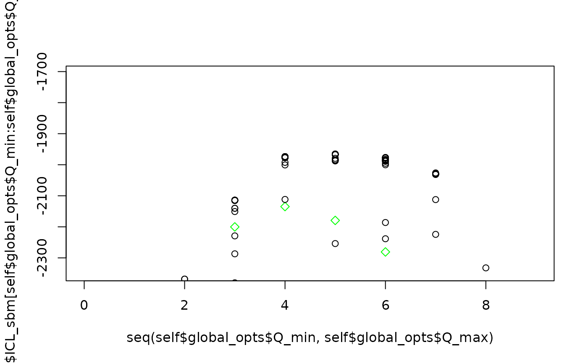
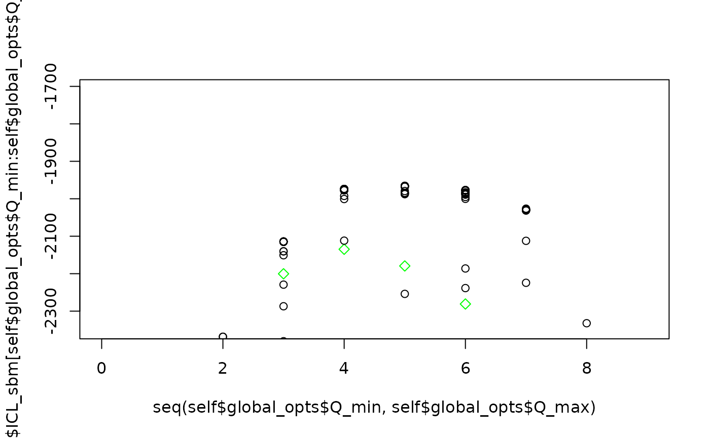

Tutorial on food webs
tutorial.Rmd
global_opts = list(nb_cores = 1L,
nb_models = 5L,
nb_init = 10L,
depth = 2L,
verbosity = 2, spectral_init = FALSE,
Q_max = 8L, plot_details = 1)
set.seed(1234)
res_fw_iid <- estimate_colSBM(netlist = foodwebs[1:3],
colsbm_model = "iid",
directed = TRUE,
net_id = names(foodwebs)[1:3],
nb_run = 3L,
global_opts = global_opts)
#> 0/1:
#> 0/1:
#> 0/2:
#> 0/2:
#> 0/3:
#> 0/3:
#> Please install the progress-package in order to get a progress bar. 

#> 0/1: Starting optimization of 3 SBMsStarting initialization from SBMs fit.
#> 0/1: ==== Finish Burn in for networks M_Martins NC_Cooper NC_Herlzier ===
#> 0/1: ICL : -2733 -2376 -2290 -1978 -2261 -2244 -2124 -2338
#> 0/1: ICL Cl : -2733 -2375 -2279 -1976 -2254 -2232 -2112 -2332
#> 0/1: ==== Starting pass number 1 for networks M_Martins NC_Cooper NC_Herlzier ===
#> 0/1: ICL : -2733 -2376 -2290 -1978 -2261 -2244 -2124 -2338
#> 0/1: ICL Cl : -2733 -2375 -2279 -1976 -2254 -2232 -2112 -2332
#> 0/1: 2 : -2364.688 -- TRUE 3 : -2112.961 -- TRUE 4 : -1974.1 -- TRUE 5 : -1969.085 -- TRUE 6 : -1979.653 -- TRUE 7 : -2008.784 -- TRUE 6 : -1969.037 -- TRUE 5 : -1969.085 -- FALSE 4 : -1974.1 -- FALSE ==== Starting pass number 2 for networks M_Martins NC_Cooper NC_Herlzier ===
#> 0/1: ICL : -2733 -2363 -2115 -1976 -1974 -1976 -2024 -2338
#> 0/1: ICL Cl : -2733 -2365 -2113 -1974 -1969 -1969 -2009 -2332
#> 0/1: 5 : -1965.867 -- TRUE 6 : -1969.037 -- FALSE 7 : -2008.784 -- FALSE 6 : -1969.037 -- FALSE 5 : -1965.867 -- FALSE 4 : -1974.1 -- FALSE 3 : -2112.961 -- FALSE ==== Starting pass number 3 for networks M_Martins NC_Cooper NC_Herlzier ===
#> 0/1: ICL : -2733 -2363 -2115 -1976 -1972 -1976 -2024 -2338
#> 0/1: ICL Cl : -2733 -2365 -2113 -1974 -1966 -1969 -2009 -2332
#> 0/1: 4 : -1974.1 -- FALSE 5 : -1965.867 -- FALSE 6 : -1969.037 -- FALSE 7 : -2008.784 -- FALSE 6 : -1969.037 -- FALSE 5 : -1965.867 -- FALSE 4 : -1974.1 -- FALSE 3 : -2112.961 -- FALSE
#> 0/2: Starting optimization of 3 SBMsStarting initialization from SBMs fit.
#> 0/2: ==== Finish Burn in for networks M_Martins NC_Cooper NC_Herlzier ===
#> 0/2: ICL : -2733 -2370 -2297 -1979 -2261 -2194 -2124 -2338
#> 0/2: ICL Cl : -2733 -2368 -2287 -1977 -2254 -2186 -2112 -2332
#> 0/2: ==== Starting pass number 1 for networks M_Martins NC_Cooper NC_Herlzier ===
#> 0/2: ICL : -2733 -2370 -2297 -1979 -2261 -2194 -2124 -2338
#> 0/2: ICL Cl : -2733 -2368 -2287 -1977 -2254 -2186 -2112 -2332
#> 0/2: 2 : -2368.365 -- FALSE 3 : -2114.025 -- TRUE 4 : -1977.237 -- FALSE 5 : -1967.54 -- TRUE 6 : -1988.862 -- TRUE 7 : -2029.763 -- TRUE 6 : -1985.317 -- TRUE 5 : -1967.54 -- FALSE 4 : -1973.826 -- TRUE 3 : -2114.025 -- FALSE ==== Starting pass number 2 for networks M_Martins NC_Cooper NC_Herlzier ===
#> 0/2: ICL : -2733 -2370 -2115 -1976 -1973 -1995 -2036 -2338
#> 0/2: ICL Cl : -2733 -2368 -2114 -1974 -1968 -1985 -2030 -2332
#> 0/2: 4 : -1973.826 -- FALSE 5 : -1967.54 -- FALSE 6 : -1985.317 -- FALSE 7 : -2028.95 -- TRUE 6 : -1976.805 -- TRUE 5 : -1965.521 -- TRUE 4 : -1973.826 -- FALSE 3 : -2114.025 -- FALSE ==== Starting pass number 3 for networks M_Martins NC_Cooper NC_Herlzier ===
#> 0/2: ICL : -2733 -2370 -2115 -1976 -1971 -1987 -2039 -2338
#> 0/2: ICL Cl : -2733 -2368 -2114 -1974 -1966 -1977 -2029 -2332
#> 0/2: 4 : -1973.826 -- FALSE 5 : -1965.521 -- FALSE 6 : -1976.805 -- FALSE 7 : -2026.369 -- TRUE 6 : -1976.805 -- FALSE 5 : -1965.521 -- FALSE 4 : -1973.826 -- FALSE 3 : -2114.025 -- FALSE
#> 0/3: Starting optimization of 3 SBMsStarting initialization from SBMs fit.
#> 0/3: ==== Finish Burn in for networks M_Martins NC_Cooper NC_Herlzier ===
#> 0/3: ICL : -2733 -2376 -2290 -1978 -2261 -2194 -2149 -2338
#> 0/3: ICL Cl : -2733 -2375 -2279 -1976 -2254 -2186 -2133 -2332
#> 0/3: ==== Starting pass number 1 for networks M_Martins NC_Cooper NC_Herlzier ===
#> 0/3: ICL : -2733 -2376 -2290 -1978 -2261 -2194 -2149 -2338
#> 0/3: ICL Cl : -2733 -2375 -2279 -1976 -2254 -2186 -2133 -2332
#> 0/3: 2 : -2374.913 -- FALSE 3 : -2115.056 -- TRUE 4 : -1976.098 -- FALSE 5 : -1980.009 -- TRUE 6 : -1998.479 -- TRUE 5 : -1972.124 -- TRUE 4 : -1972.502 -- TRUE 3 : -2115.019 -- TRUE ==== Starting pass number 2 for networks M_Martins NC_Cooper NC_Herlzier ===
#> 0/3: ICL : -2733 -2376 -2115 -1976 -1978 -2003 -2149 -2338
#> 0/3: ICL Cl : -2733 -2375 -2115 -1973 -1972 -1998 -2133 -2332
#> 0/3: 4 : -1972.502 -- FALSE 5 : -1968.783 -- TRUE 6 : -1998.479 -- FALSE 7 : -2017.677 -- TRUE 6 : -1965.879 -- TRUE 5 : -1967.548 -- TRUE 4 : -1972.502 -- FALSE ==== Starting pass number 3 for networks M_Martins NC_Cooper NC_Herlzier ===
#> 0/3: ICL : -2733 -2376 -2115 -1976 -1976 -1975 -2021 -2338
#> 0/3: ICL Cl : -2733 -2375 -2115 -1973 -1968 -1966 -2018 -2332
#> 0/3: 5 : -1967.548 -- FALSE 6 : -1965.879 -- FALSE 7 : -2017.677 -- FALSE 8 : -2065.816 -- TRUE 7 : -2005.106 -- TRUE 6 : -1965.879 -- FALSE 5 : -1967.548 -- FALSE 4 : -1972.502 -- FALSE
#> Warning in pmax(self$ICL_clustering, rep(-Inf, Q_max)): 0/1: an argument will be
#> fractionally recycled
#> Warning in pmax(self$ICL_clustering, rep(-Inf, Q_max)): 0/1: an argument will be
#> fractionally recycled
#> Warning in pmax(self$ICL_clustering, rep(-Inf, Q_max)): 0/1: an argument will be
#> fractionally recycled
#> Warning in pmax(self$ICL_clustering, rep(-Inf, Q_max)): 0/2: an argument will be
#> fractionally recycled
#> Warning in pmax(self$ICL_clustering, rep(-Inf, Q_max)): 0/2: an argument will be
#> fractionally recycled
#> Warning in pmax(self$ICL_clustering, rep(-Inf, Q_max)): 0/2: an argument will be
#> fractionally recycled
#> Warning in pmax(self$ICL_clustering, rep(-Inf, Q_max)): 0/3: an argument will be
#> fractionally recycled
#> Warning in pmax(self$ICL_clustering, rep(-Inf, Q_max)): 0/3: an argument will be
#> fractionally recycled
res_fw_iid$ICL_clustering
#> [1] -2732.899 -2364.688 -2112.961 -1972.502 -1965.521 -1965.879 -2005.106
#> [8] -2065.816
plot(res_fw_iid$best_fit, type = "meso", mixture = FALSE, ord = c(3,4,5,2,1))
#> New names:
#> * NA -> ...1
#> * NA -> ...2
#> * NA -> ...3
plot(res_fw_iid$best_fit, type = "block", net_id = 1) +
plot(res_fw_iid$best_fit, type = "block", net_id = 2) +
plot(res_fw_iid$best_fit, type = "block", net_id = 3)